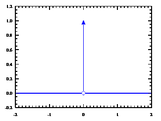
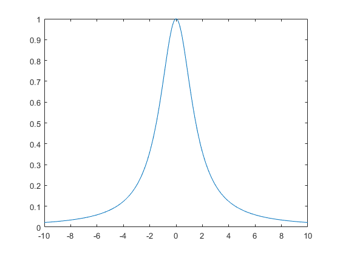

麦克斯韦方程
散度与旋度
散度代表了某事物的发散程度，对应于某种守恒量，其数学表达式为：
∇=∂x∂i+∂y∂j+∂z∂k
对于一个物理变量 f(r)，其散度为
∇f=∂x∂fi+∂y∂fj+∂z∂fk
对于给定的空间良态函数 E(r)
∬S1E(r)da=∬S2E(r)da=⋯=something
虽然面的大小不同，但是面上的密度也不同，导致最终的通量是相同的。
旋度代表某事物的旋转程度，也对应于某种守恒量。对于特定的物理量 F(r)=(P(r),Q(r),R(r))，其旋度为
∇×F=deti∂x∂Pj∂y∂Qk∂z∂R
对于给定的空间良态函数 H(r)
∮C1H(r)⋅dl=∮C2H(r)⋅dl=⋯=something
虽然环路的大小不同，但是环路上的密度（快慢）也不同，最终导致环路积分是相同的。
一般来说，一个物理场总是同时具有散度和旋度
-
一个物理量通常同时具有散度和旋度
-
散度代表了它的发散程度，并且存在一个守恒量，对应于一个面积分 ∬SE(r)da=something
-
旋度代表了它的旋转程度，并且也存在一个守恒量，对应于一个线积分 ∮CH(r)⋅dl=something
-
注意：我们尚未谈论电磁场
亥姆霍兹分解
为什么我们只谈论散度和旋度？因为考虑散度和旋度就足够了。物理学中的任何场都可以表示为一个 X 场的梯度 ∇X与一个 Y 场的旋度 ∇×Y 之和。
令 F 为定义在有界区域 V⊆R3 上的矢量场，其可以分解为一个无旋分量和一个无散分量：
F=−∇ϕ+∇×A
其中 ϕ 是一个标量场，A 是一个矢量场。
Φ(r)A(r)=4π1∫V∣r−r′∣∇′⋅F(r′)dV′−4π1∮Sn′⋅∣r−r′∣F(r′)dS′=4π1∫V∣r−r′∣∇′×F(r′)dV′−4π1∮Sn′×∣r−r′∣F(r′)dS′
其中 r 被称为测量点，即我们想要了解的感兴趣的位置，r′ 被称为源点，即任何可能对测量点产生影响的点，∇′ 仅作用于 r′。
基础数学：
∇∇′=∂x∂i+∂y∂j+∂z∂k=∂x′∂i+∂y′∂j+∂z′∂k
-
公式：
∇∣r−r′∣1=−∇′∣r−r′∣1
-
拉普拉斯算符
∇2=∇⋅∇=∂x2∂2+∂y2∂2+∂z2∂2
-
三维 δ 函数
δ3(r−r′)=−4π1∇2∣r−r′∣1
-
δ 函数的性质
∫f(r)δ3(r−r′)dV=f(r′)
-
矢量分析公式
∇2a=∇(∇⋅a)−∇×(∇×a)
利用以上数学基础，我们可以证明任意场 F 都可以用散度和旋度表示
F=−∇ϕ+∇×A
但这看起来仍然与上述 Φ(r) 和 A(r) 方程不同。区别在于：一个要求对整个空间进行积分，而另一个要求进行体积分（包括对表面的积分）。
在许多情况下，了解某个表面的分布非常有用，因为它可以提供所有其他必要的信息（例如边界值问题）。
如果 V=R3 且因此是无界的，并且当 r→∞ 时 F 的衰减速度快于 1/r，则有
Φ(r)A(r)=4π1∫R3∣r−r′∣∇′⋅F(r′)dV′=4π1∫R3∣r−r′∣∇′×F(r′)dV′
我们只需考虑一个包含源点的足够大的区域。
电磁场
-
物理学中任何给定的场都可以表示为 F=−∇ϕ+∇×A
-
散度代表了其发散程度，并且存在一个守恒量，对应积分 ∬SE(r)da=something；
-
旋度代表了其旋转程度，并且也存在一个守恒量，对应积分 ∮CH(r)dl=something；
傅里叶变换
定义
帮助理解傅里叶变换的一个网站
对于给定的函数 x(t)，其傅里叶变换为：
X(ω)x(t)=2π1∫−∞+∞x(t)e−jωtdt=2π1∫−∞+∞X(ω)ejωtdω
其离散形式的表示
x(t)=n=−∞∑+∞X(n⋅Δω)ejωt2πΔω=2π1∫−∞+∞X(ω)ejωtdω
ejωt 是一个关于时间的振荡函数，它在复平面上的表示是：
A 越大，半径越大；ω 越大，它旋转得越快。
案例
第一个案例：首先 δ 函数为：
δ(ω)=2π1∫−∞+∞e−jωtdt
对于单色波 E=E0ejω0t，其傅里叶变换为：
E(ω)E(ω)E(ω)=2π1∫−∞+∞E0ejω0te−jωtdt=2πE0∫−∞+∞ej(ω0−ω)tdt=2πE0δ(ω0−ω)
这说明单色波确实只由单一频率分量组成。然而在自然界中，总是存在损耗和衰减。对于寿命为 τ 的单色波 E=E0ejω0t：
E=E0ejω0t−t/τ=E0ejω0t−γt(t≥0)
我们可以看出，E(t) 仅在 γ 的时间尺度内取显著值。当 t→+∞ 时，E→0。
对于寿命为 τ 的单色波
E=E0ejω0t−t/τ=E0ejω0t−γt(t≥0),
其傅里叶变换为：
E(ω)E(ω)E(ω)I(ω)=2π1∫−∞+∞E0ejω0t−γte−jωtdt=2πE0∫0+∞e[j(ω0−ω)−γ]tdt=2πE0j(ω−ω0)−γ1=∣E(ω)∣2∝(ω0−ω)2+γ21
|

|

|
上两图分别是寿命无限和寿命有限的单色光光谱。从图中可以看出，寿命会导致谱线展宽，有限寿命的单色光具有一定的频率宽度，这就是所谓的自然线宽。右图中的谱线形状被称为洛伦兹线。
I(ω)∝(ω0−ω)2+γ21
第二个案例：对于三维空间中的给定函数 F(r)，可以表示为散度和旋度的组合 F=−∇ϕ+∇×A。
F 的傅里叶展开为：
F(r)=∭G(k)eik⋅rdVk
我们构造以下函数：
GΦ(k)GA(k)=i∣k∣2k⋅G(k)=i∣k∣2k×G(k)
可以证明：
G(k)=−ikGΦ(k)+ik×GA(k)
那么
F(r)=∭G(k)eik⋅rdVk=−∭ikGΦ(k)eik⋅rdVk+∭ik×GA(k)eik⋅rdVk
如果我们定义：
Φ(r)A(r)=∭GΦ(k)eik⋅rdVk=∭GA(k)eik⋅rdVk
那么我们得到：F(r)=−∇Φ(r)+∇×A(r)
色散关系
线性响应
对于给定的输入 E(t)，系统的响应函数是 R(t,t′)，则系统的输出 D(t) 为
D(t)=∫R(t,t′)E(t′)dt′
通常，系统的响应仅取决于 t 和 t′ 之间的时间差
D(t)=∫R(t−t′)E(t′)dt′
对于线性响应 D(t)=∫R(t−t′)E(t′)dt′ 中的每一部分，其傅里叶变换为：
D(t)E(t′)R(t−t′)=∫D(ω)ejωtdω=∫E(ω1)ejω1t′dω1=∫R(ω2)ejω2(t−t′)dω2
于是我们得到：
∫D(ω)ejωtdω=∭dω1dω2dt′E(ω1)R(ω2)ej(ω1−ω2)t′+jω2t
我们首先对 t′ 进行积分：
∫D(ω)ejωtdω=∬dω1dω2E(ω1)R(ω2)ejω2t∫dt′ej(ω1−ω2)t′
右边的积分给出了一个 δ 函数
∫D(ω)ejωtdω∫D(ω)ejωtdω∫D(ω)ejωtdω=∬dω1dω2E(ω1)R(ω2)ejω2tδ(ω1−ω2)=∫dω1E(ω1)R(ω1)ejω1t=∫dωE(ω)R(ω)ejωt
由于上式在所有时间 t 上都成立，因此我们可以比较两边的积分内的表达式，得到：
D(ω)=R(ω)E(ω)
现在，我们已经成功地将一个时间依赖的响应问题：
D(t)=∫R(t−t′)E(t′)dt′
转化为一个依赖于时间差的问题：
D(ω)=R(ω)E(ω)
然而，我们仍然需要知道输入片段中所有 ω 的 E(ω) 值，以及系统响应 R(ω)。乍一看，这种方法似乎并没有为我们提供显著的便利或好处。然而，许多物理问题通常包含一些显著的 ω 分量。
若综合考虑系统的空间响应和时间响应，则有
D(r,t)=∫R(r,r′,t,t′)E(r′,t′)dr′dt′
如果我们在空间和时间上都具有平移对称性
D(r,t)=∫R(r−r′,t−t′)E(r′,t′)dr′dt′
空间响应
再次利用傅里叶变换的方法
D(r,t)E(r,t)R(r−r′,t−t′)=∫D(k,ω)ejkr−jωtdkdω=∫E(k,ω)ejkr−jωtdkdω=∫R(k,ω)ejk(r−r′)−jω(t−t′)dkdω
我们得到：
D(k,ω)=R(k,ω)E(k,ω)
在不同的应用场景中，R(k,ω) 可以有不同的名称，例如介电常数 ε(k,ω)，磁导率 μ(k,ω) 等。
单色平面波
为什么单色平面波很重要？
D(r,t)=∫D(k,ω)ejkr−jωtdkdω
因为任何系统都可以被视为许多单色平面波的叠加。只要我们已知了占据显著地位（即主要成分）的单色平面波，我们就能理解整个系统的特性。
我们已经得到了
D(k,ω)=R(k,ω)E(k,ω)
对 D(r,t) 进行关于时间的微分运算，例如 ∂t∂，得到：
∂t∂D(r,t)=∂t∂∫D(k,ω)ejkr−jωtdkdω=∫−jωD(k,ω)ejkr−jωtdkdω
类似地，对 D(r,t) 进行关于时间或空间的微分运算，例如 ∂t∂ 或 ∇，可以得到：
∂t∂D(r,t)∇D(r,t)→−jω⋅D(k,ω),→jk⋅D(k,ω),∂t2∂2D(r,t)∇2D(r,t)→−ω2⋅D(k,ω)→−∣k∣2⋅D(k,ω)
由于 D(r,t) 必须满足特定的物理方程，将上述量代入方程中自然要求 k 和 ω 满足一定的关系，使得 k 和 ω 不能取任意值。k 和 ω 之间必须满足的这种关系被称为色散关系。
例如，对于自由空间中的亥姆霍兹方程
∇2E+c21∂t2∂2E=0
对应的色散关系为
ω2=c2∣k∣2
为什么色散关系的概念很重要？
- 色散关系源于系统的时间和空间响应。
- 在时间域中，它代表了响应速度与系统的因果关系之间的联系。
- 在空间域中，它代表了相邻“物体”之间响应的强度（局域 / 非局域）。
为什么单色平面波的概念很重要？
D(r,t)=∫D(k,ω)ejkr−jωtdkdω